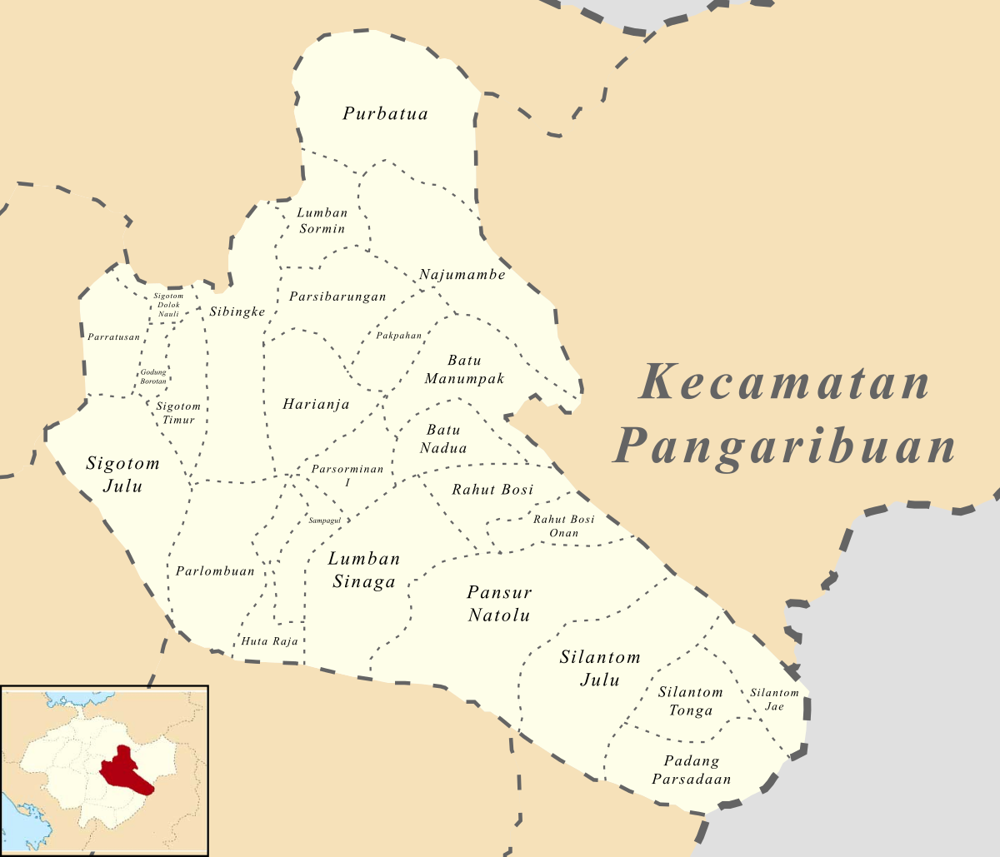

Hometown
Hometown saya adalah Pangaribuan. Pangaribuan adalah sebuah kecamatan yang terletak di kabupaten Tapanuli Utara, provinsi Sumatera Utara, Indonesia. Ibu kota kecamatan ini berada di desa Pakpahan.
Terdapat 26 desa pada Kecamatan Pangaribuan yaitu :
1. Batu Nadua
2. Batu Manumpak
3. Godung Borotan
4. Harianja
5. Huta Raja
6. Lumban Sinaga Simatupang
7. Lumban Sormin
8. Najumambe
9. Padang Parsadaan
10. Pakpahan
11. Pansur Natolu
12. Parlombuan
13. Parratusan
14. Parsibarungan
15. Parsorminan I
16. Purbatua
17. Rahut Bosi
18. Rahut Bosi Onan
19. Sampagul
20. Sibingke
21. Sigotom Dolok Nauli
22. Sigotom Julu
23. Sigotom Timur
24. Silantom Jae
25. Silantom Julu
26. Silantom Tonga